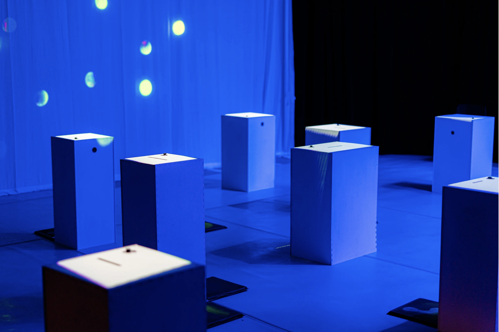

Multiscapes
Multiscapes is a journey of human connection revealed through an interactive installation that blends dance, technology, design and sound. The project centers on a male duet, and explores uncertainty and intimacy through visually and sonically active environments. With no seats provided, audience members move around the space throughout the performance, including negotiating an “effort corridor”—a sensorial playground of balloons and puzzles—to unlock the unexpected.
My role in this project was as the main developer of the technology responding to the dancers and the audience.
Performance SiteCollaborators: Helanius Wilkins, Avery Ryder Turner, Iain Court, Clement Zheng

